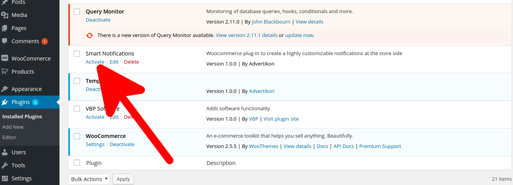
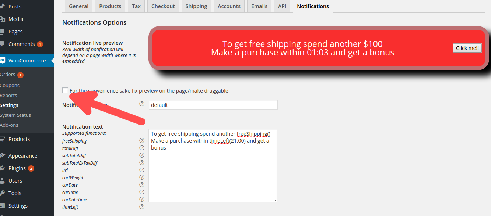
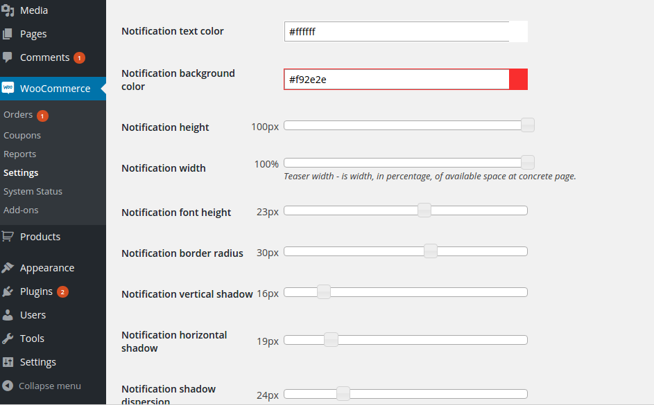
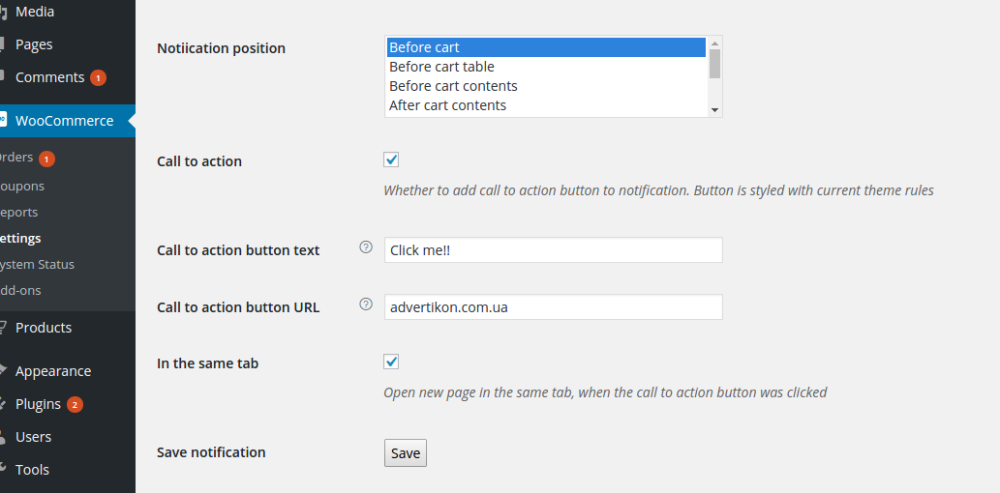
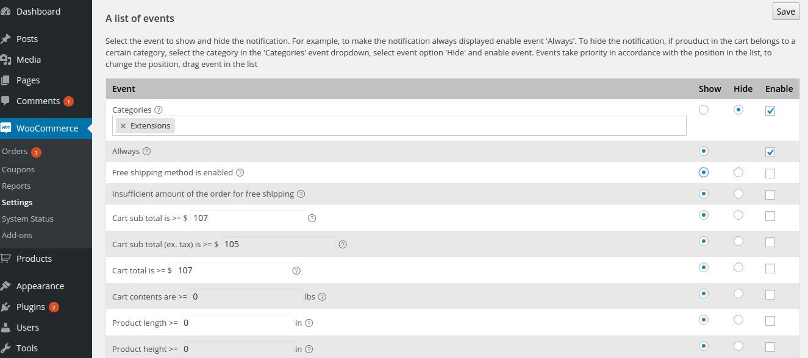
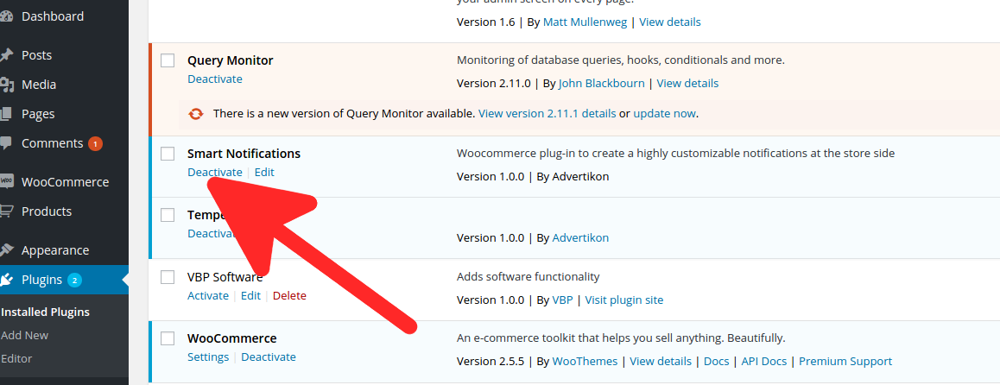

Created: 06/13/2016
By: Advertikon
Email: support@advertikon.com.ua
Thank you for purchasing my WooCommerce plugin. If you have any questions that are beyond the scope of this help file, please feel free to email via my user page contact form here. Thanks so much!
Woocommerce plug-in to create a highly customizable notifications at the store side, which allow communicate with customers as if personally. With this extension you can create unlimited number of notifications and display each of them to specific customer on a particular page, under certain conditions. Extension gives ability to completely customize the view of notification – from the background color to the color of the shadow, cast by the notification. Dozen of build-in functions allow on the fly change the text of the notification, depending on the specific situation: the amount in the basket, guest session, current time, etc. You also can add call to action button which will lead customer to any page you specify. And the most powerful feature of the extension is ability to specify on which conditions show each notification ( more then 20 rules).
In order to install the plugin unzip package file and upload its contents to yourServerRootFolder/WordPressFolder/wp-content/plugins/ folder.
Such folder structure will be in that case, when WordPress blog is installed in subfolder. In most cases YourStoreRootFolder will be the same as WordPressFolder.
Then go to WordPress Dashboard > Plugins and click plugin's Activate link to activate it (fig. 1).
 Figure 1. Plugin activationTo configure the plugin go to Dashboard > WooCommerce > Settings > Notifications tab. To create notification you need follow the next steps:
All changes to notification appearance will be reflected by notification preview. To have the notification preview always in sight, when you scroll down the page, you can fix it on the page, by clicking checkbox (fig 2). That will fix it in some location of the page, also you can drag it at any place you need.
 Figure 2. Settings pageTo change notification text you need to type in it in Notification Text input field. Also you can use set of predefined functions to get environment specific values: shopping cart subtotal, current time etc. For example you want tell customer, that in order to get free shipping, he or she need to make purchase for specific amount. To make that type in something like this: 'To get free shipping spend another freeShipping()'. Where freeShipping() is a function, which calculates difference between minimum free shipping amount and cart subtotal. So in result you'll get this: 'To get free shipping spend another 25$'. In order to make the function work properly you need type in her name literally with parentheses and arguments (if applied). List of all supported functions you can find at Notification Text field description. Functions description and list of supported arguments you can see in tool-tip when clicking on circle with question mark, which placed opposite of each function.
You can change almost every aspect of notification appearance using appearance controls (fig. 3). These changes will be reflected by Notification Preview. One thing you should be aware of is that notification implements responsive design, so you set notification width in percents of available space, and real width will depend on specific page and theme.
 Figure 3. Notification appearance controlsYou can select amongst several places at checkout and cart pages (fig. 4) where to insert the notification (you can select more then one place).
 Figure 4. Notification position optionsTo configure the notifications display logic you need activate desired events. All events have two options: show and hide. Exception is event always, which has only show option. It means when an event is enabled notification will be shown or hidden depend on its settings. Each event has priority, regarding its position in events list (fig. 5). The higher event's position - the higher its priority. You can change event's priority by dragging it in the list. Events logic is following: first enabled event, which is matched, will fire, and notification will be shown or hidden depend on its option.
 Figure 5. Notification's eventsFor example, if you want that notification will be shown alway, but not when cart has product with specific category. To do it drag event Categories higher than event Always (fig. 5). In event Categories select desired category, set option hide and enable events Categories and Always.
To changes, you have made, take effect, you need save the notification, by clicking Save button. To make copy of current notification - save it under another name.
To deactivate plugin go to WordPress Dashboard > Plugins and click plugin's Deactivate link to deactivate it (fig. 6). If you want totally remove plugin - click Delete link. In this case all plugin's data will be removed as well.
 Figure 6. Plugin deactivation